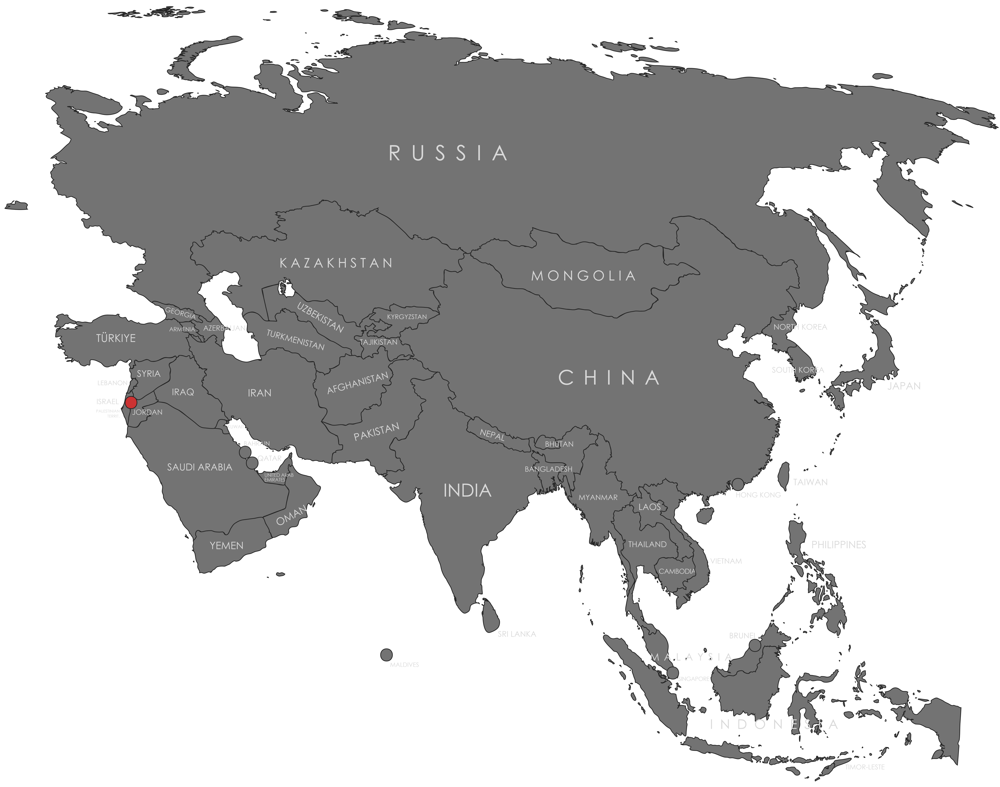

Specifications
- Local Name: فلسطين (Filasṭīn)
- Proportion: 1:2
- Name of the Flag: علم فلسطين (ʿAlam Filasṭīn – Pan-Arab Flag)
- Adopted: May 28, 1964
Symbolism
- Black: Oppression endured by the Palestinian people
- White: Peace and hope for the future
- Green: Fertility, growth, and Islamic heritage
- Red triangle: The blood of martyrs and struggle for freedom
- Horizontal tricolor of black, white, and green with a red triangle on the hoist side
Colors:
Shapes / Symbols:
Meaning / Special Display
- The flag is widely displayed in demonstrations and solidarity events worldwide, representing the Palestinian struggle and unity.
- Raised during national commemorations to honor history, resistance, and aspirations for statehood.
Description
- The flag symbolizes the resilience, identity, and cultural heritage of the Palestinian people.
- For citizens and supporters, it represents hope, national pride, and the ongoing pursuit of sovereignty and justice.

Return to Gallery